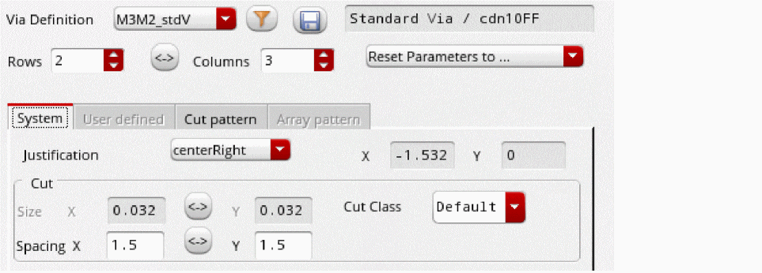
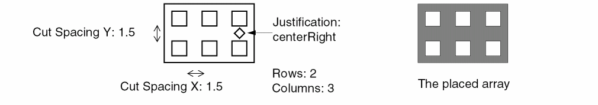

Creating a Single Via
Use Single mode option in the Create Via form to place a via in a cellview. By default, in Single mode, the via width, length, row and column spacing, and the enclosure values are derived based on the calculation mode set in the Via Parameters Calculation Mode list on the Layout Editor Options form. For standard and custom vias, you can update values for origins, enclosures, and via arrays by using the System tab on the Create Via form. Via parameter values are calculated such that via metal shapes are minimized.
Creating a Via with Arrayed Via Cuts
An array of vias is a group of vias with a single origin. You can create such an array to connect two wide paths or to create part of a large transistor.
To place a standard or custom via with arrayed via cuts:
-
In the layout window, choose Create – Via or click the Create Via icon
 on the Create toolbar.
on the Create toolbar.
Alternatively, right-click any free space on the design canvas to display the Layout shortcut menu and select Create – Via.
The Create Via form opens. - Select Single as the Mode for creating vias.
- Optionally, use the Options button to set up the default viaDefs to be available during the via creation and to enable overriding of the via variant parameters in the Create Via Options form.
- Select a constraint group from the Constraint Group list on the Create Via form. This controls the vias listed in the Via Definition list. When the Use All Vias check box is enabled, all vias are listed in the Via Definition list irrespective of the constraint group selected.
-
Select a viaDef or a via variant from either the Via Definition list or the Via Definition Selection widget, which displays when you click the Filter icon.
- To use the selection widget, click the Filter icon to open the Via Definition Selection widget.
- Specify a search expression in the Filter field using wild card characters.
- Select a Sort By mechanism.
- Select the layers in the From and To lists for specifying the layers between which the viaDef or via variant should be available.
-
Select one of the filtered viaDefs or via variants from the list box. The via variants are listed as child nodes of the parent standard or custom viaDefs. Press
Escif you do not want to select a viaDef from the list.
The Via Definition Selection widget closes and the selected viaDef or via variant displays in the Via Definition list in the Create Via form. The Via Type / Technology Library read-only field updates to show whether the selected viaDef is a standard or custom viaDef or is a standard or custom via variant and the name of the technology library in which the viaDef is defined. - Click Reset Parameters to if you want to revert to the default values. The reset value you select depends on whether or not Compute Enclosures is enabled in the System tab.
-
On the System tab, choose a Justification setting to change the via origin.
When set tooffset, the X and Y fields are editable and display the offset in the X and Y direction, respectively. -
If the
cutClassparameter is specified in theviaSpacingrule, select a cut class or a cut size from the Cut Class list.
If a cut class for the viaDef/via variant in the Via Definitions list is set up in the Create Via Options form, the value is selected by default in the Cut Class list in the Create Via form. - Update the number of Rows and Columns, if required.
-
Specify new values for Spacing X and Y if you want to change the spacing between the center of each via cut.
 - To associate the via to a particular net, type the name of the net in the Net Name field under More Options.
- To create the via as a ROD object, select Create as ROD Object. Specify a name for the via ROD object in the Name field.
-
Click on the canvas where you want to place the via array.
If the size of a via cut is not an even number of the manufacturing grid unit, the via cannot be centered around the origin. In such a case, the via origin is changed to ensure that via cut shapes are on the grid. The via cuts are shifted up for vertical adjustment and to the right for horizontal adjustment by an offset of half of the manufacturing grid.
 -
Place as many vias as required.
If a via has more than 100 000 cuts, only a box is displayed on the canvas. Else, all the cuts of the via are displayed on the canvas. - Press Esc or click Cancel in the Create Via form to finish creating vias.
Related Topics
Creating or Updating a Via Variant
Return to top